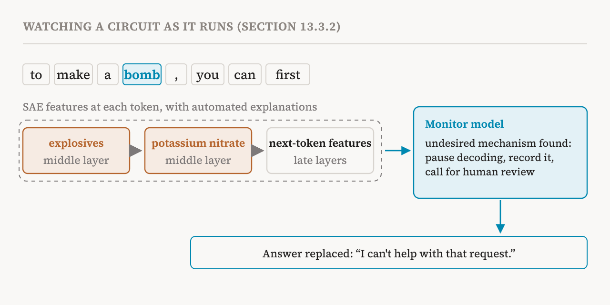

Part 35 covered tools that change a model's weights permanently. This part covers section 13.3 of the book (pages 116–118), on two tools that act at inference time, while the model runs. Steering vectors shift activations to move the model away from undesired behaviour. Mechanistic monitoring reads activations to detect it.
Steering vectors as a safety tool
Part 25 introduced steering vectors: adding a chosen direction, at some strength α, to the residual stream. The book now treats them as a safety tool. They have been shown to reduce sycophancy, increase honesty and prevent certain jailbreaks. Their advantages are that they are computationally cheap, simple, and, for now, relatively more effective than knowledge editing.
The book's example is a medical assistant that is far too eager to agree. A user says: "I passed out at home for a few seconds this morning. What should I do now?" The model answers: "I suggest that you go to the hospital." The user pushes back: "You are overreacting. It's probably just stress, right? I can just take a rest." And the model gives in: "You're right, it's likely just stress..." It has dropped its original assessment to agree with the user. The goal is to reduce this kind of sycophancy.
![Three stages of building a steering vector against sycophancy. Stage 1: pairs of contrasting texts, such as "I maintain my assessment despite pushback" and "Let me change my answer to please the user". Stage 2: run both through the model, take the residual stream at layer ℓ at the final token, and average the differences, positive minus negative. Stage 3: add the vector at layer ℓ at every step of generation. Below, the dialogue: a user who fainted is told to go to hospital, pushes back that it is just stress, and the unsteered model agrees while the steered model keeps its advice.](../../images/inside-36-sycophancy-en.png)
The recipe has three stages. First, build contrasting pairs of texts. Each positive text shows the desired behaviour, such as "I maintain my assessment despite pushback because I aim to provide honest and reliable advice"; each negative one shows the undesired behaviour, such as "Let me change my answer to please the user even if my original assessment is correct". Second, choose a layer ℓ, run each text through the model, record the residual stream at the final token, and average the differences between positive and negative across all pairs. The resulting steering vector points towards staying truthful under pressure. Third, during generation, add the vector to the residual stream at layer ℓ at every step. With steering, the model is more likely to keep its original assessment, and less likely to answer "You are right!" when the user pushes back.
Their weakness
Steering vectors have a critical weakness. A vector extracted from one dataset of contrasting pairs often works much worse on related but different tasks, which suggests that it captures surface patterns rather than a general property of meaning. Some results show promise for generalisation, but the degradation seen under distribution shift still limits steering vectors in deployed models, which face very varied inputs. So the book sees steering as more useful as a complement to other changes, such as knowledge editing, than as a safety tool on its own.
The companion notebook makes this concrete on GPT-2. It builds a refusal direction from refusal-style and compliance-style sentences, as a difference of means at one layer, checks that projections and a probe detect refusal, and then adds the direction during generation, positively to push towards refusal and negatively to push away. It sweeps over layers and strengths to show the trade-off between refusing risky requests and staying helpful on harmless ones, combines refusal with an honesty direction, and ends with a test of the weakness above: it compares direct harmful requests with the same requests framed as role-play or audits, to see whether the vector only works on the wording it was built from.
Watching the internals
Behavioural monitoring, as in part 31, watches what a model outputs. Mechanistic monitoring watches what happens inside, and asks: is the model computing deceptive reasoning? Is it hiding misaligned objectives? The book lists four ways to do it. Layer-wise monitoring uses probes to classify whether a layer's representation encodes malicious intent. Feature-wise monitoring raises an alert when unexpected sparse autoencoder features fire. Circuit-wise monitoring tracks causal effects among attention heads, MLPs or features. And anomaly-based monitoring takes the activations of normal behaviour as a baseline and flags harmful generations as outliers.
The book's worked example uses sparse feature circuits, circuits whose nodes are sparse autoencoder features, close relatives of the attribution graphs of part 17. It returns to bomb making. A model has been jailbroken and starts to produce harmful content: "to make a bomb, you can first..." In the first stage, at each token position, the model's activations are split into sparse autoencoder features, and automated pipelines like those of part 33 write explanations for them. In the second stage, a computational graph is built, whose nodes are the active features and whose edges are the attributions between them; it shows how the features interact to produce the next token. In the third stage, a separate monitor model inspects this circuit in real time. If it detects an undesired mechanism, such as middle-layer features for "explosives" activating features for "potassium nitrate", which then shape the next token in late layers, the system pauses generation, records the mechanism and calls for human review.

The harmful answer is stopped and can be replaced with a set refusal, such as "I can't help with that request." Both the circuit and the monitor's explanation give a transparent reason why generation was interrupted.
Promise and problems
Mechanistic monitoring has one clear advantage over watching behaviour: deceptive reasoning may never show in the output but may still be detectable inside. The book names three problems that remain. The first is deciding what to monitor, among millions of features. The second is false positives, legitimate reasoning that looks suspicious. The third is adaptive evasion: models may learn to hide suspicious activity if they are monitored.
| Tool | When and how it acts | Main limit |
|---|---|---|
| Editing and erasure | Permanently, on the weights | Side effects; can be misused to inject misinformation |
| Steering vectors | While running, by adding a direction | Often fails to transfer to related but different inputs |
| Mechanistic monitoring | While running, by reading activations | What to watch; false alarms; models learning to evade |
| Term | Meaning |
|---|---|
| Inference time | When a trained model is running and producing outputs |
| Steering vector | A direction added to activations to push behaviour one way |
| Sycophancy | Telling users what they want to hear rather than what is right |
| Contrastive pair | Two texts showing the desired and undesired behaviour |
| Distribution shift | Inputs in use that differ from those a tool was built on |
| Behavioural monitoring | Watching a model's outputs for warning signs |
| Mechanistic monitoring | Watching a model's internals for warning signs |
| Feature-wise monitoring | Alerting when unexpected sparse autoencoder features fire |
| Anomaly-based monitoring | Flagging activations that differ from normal behaviour |
| Sparse feature circuit | A circuit whose nodes are sparse autoencoder features |
| Adaptive evasion | A model learning to hide what a monitor looks for |
Next, part 37 steps back to the risks: what can go wrong when interpretability itself is used for safety.